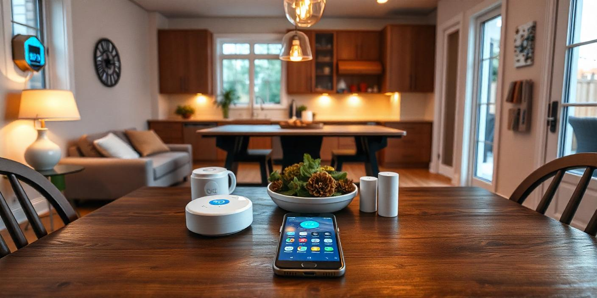
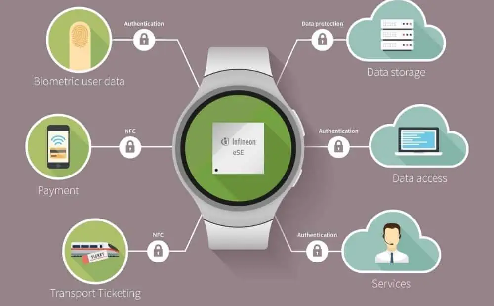
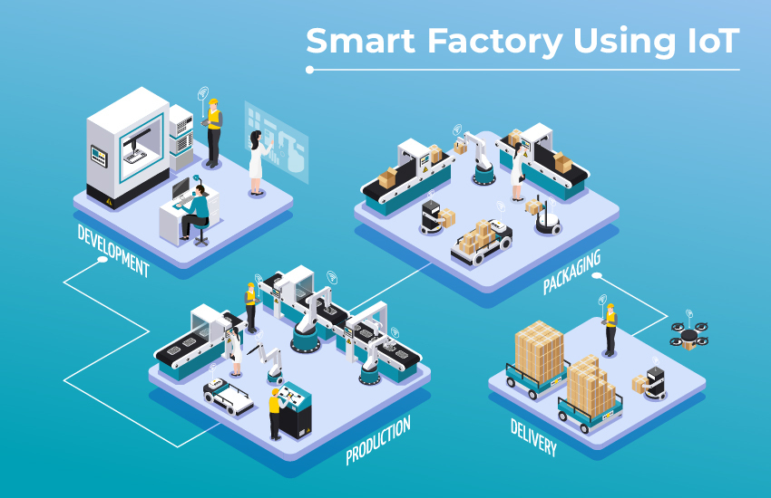
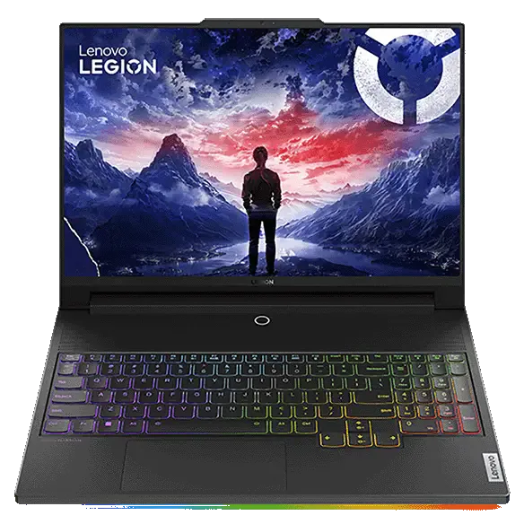
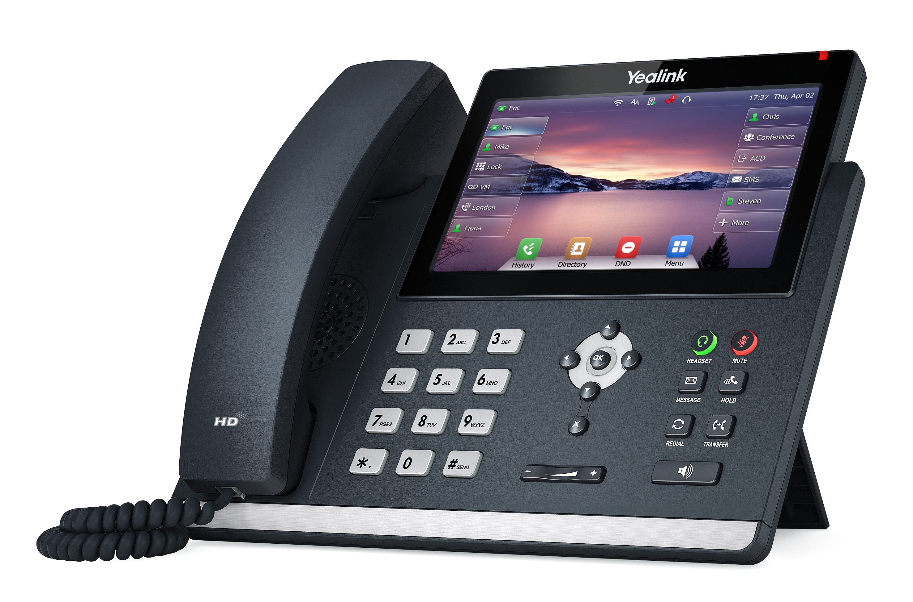
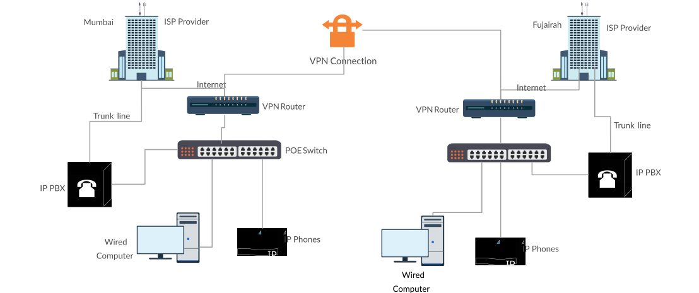
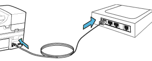
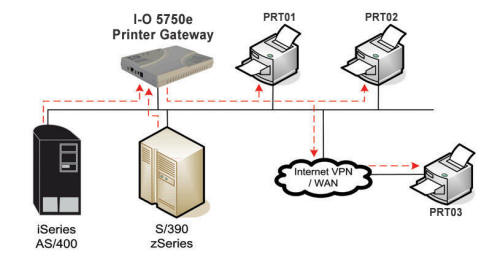
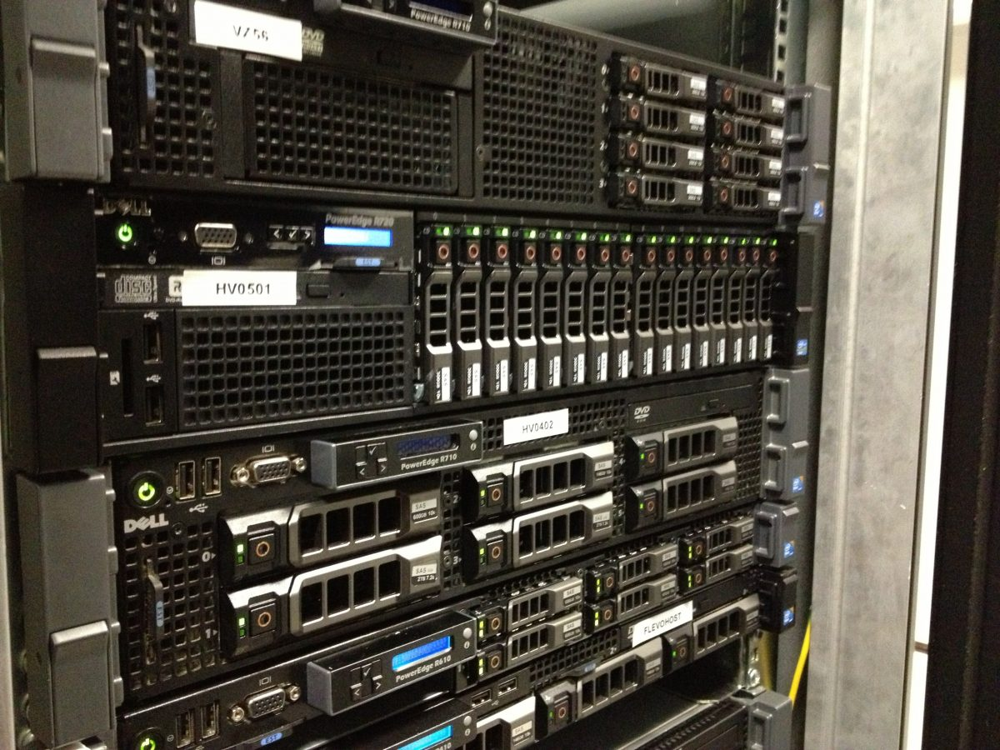
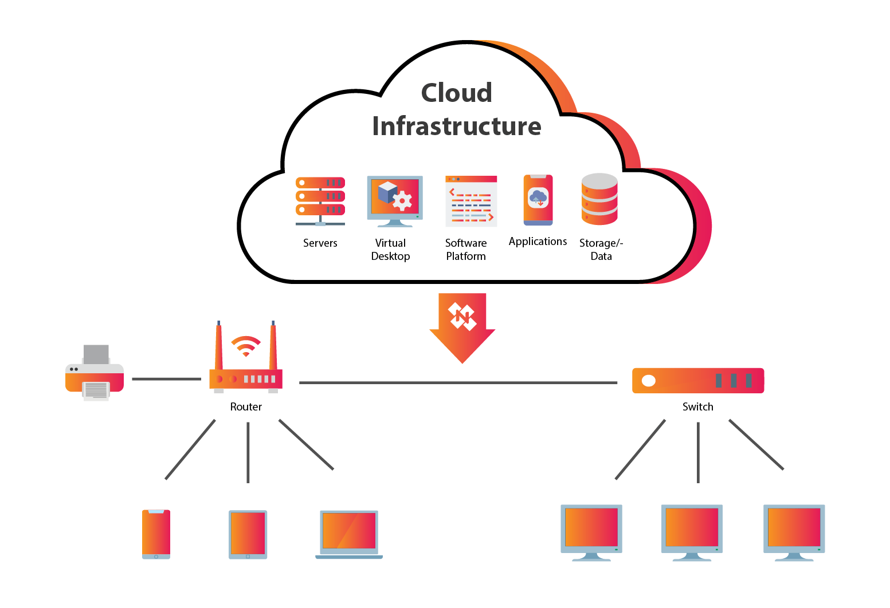

🌍 1️⃣ IoT Devices (Internet of Things)
IoT devices are small smart electronic devices connected to a network (usually the Internet) that can collect data, communicate, and act automatically without human interaction.

🔹 What are IoT Devices? (Simple Words)
IoT devices are designed to observe the physical world and report it digitally.
Physical World + Sensors + Internet + Software
🔧 Key Components of an IoT Device
1️⃣ Sensors / Actuators
- Sensors: Temperature, Humidity, Motion, Light
- Actuators: Turn ON/OFF, Rotate motor, Open valve
2️⃣ Processing Unit (Microcontroller)
The microcontroller acts as the brain of the IoT device (ESP32, Arduino, ARM chips). It reads sensor data, processes it, and sends it to the network.
3️⃣ Network Interface
- Wi-Fi
- Bluetooth
- Zigbee
- Cellular (NB-IoT, LTE-M)
4️⃣ Power Source
- Battery
- Rechargeable cell
- Solar power (Industrial IoT)
🔹 Common Examples of IoT Devices
🏠 Smart Home
- Smart bulbs – control brightness and color via app
- Smart fans – auto-adjust speed based on temperature
- Smart plugs – remote ON/OFF control
⌚ Wearables
- Heart rate monitoring
- Step counting
- Sleep tracking

🏭 Industrial IoT (IIoT)
Industrial IoT is used for machine vibration monitoring, predictive maintenance, and energy consumption tracking.

🌐 Network Characteristics of IoT Devices
📡 Mostly Wireless
IoT devices avoid cables because they allow easy installation, mobility, and low cost.
🔌 Communication Technologies
| Technology | Range | Power | Use Case |
|---|---|---|---|
| Wi-Fi | Medium | High | Smart Homes |
| Bluetooth | Short | Very Low | Wearables |
| Zigbee | Medium | Low | Smart Lighting |
| Cellular (NB-IoT) | Long | Medium | Smart Meters |
🔁 Real-World IoT Data Flow
Temperature Sensor
↓
Wi-Fi Router
↓
Cloud Server
↓
Mobile App Dashboard
✅ Advantages of IoT Devices
- Automation without manual control
- Remote monitoring
- Energy efficiency
- Data-driven decisions
❌ Disadvantages of IoT Devices
- Security risks
- Limited processing power
- Internet dependency
- Battery limitations
💻 2️⃣ Computers & Mobile Devices
Computers and mobile devices are the most common endpoint devices in any network.
🔹 What are Computers & Mobile Devices?
Endpoint devices are devices where users directly interact with the network to send or receive data. They are called endpoints because data starts and ends at them.
- Browsing a website
- Joining a video call
- Sending an email
🔹 Types of Computers & Mobile Devices
🖥️ Desktop Computers
Desktop computers are fixed-location devices usually connected using wired Ethernet. They offer high performance and stable network connectivity.
- Used in offices
- Computer labs
- Server rooms (as workstations)
💻 Laptops
Laptops are portable computers that mainly use Wi-Fi and sometimes Ethernet.
- Education
- Office work
- Development
- Networking labs (Cisco Packet Tracer, Wireshark)

📱 Smartphones
Smartphones are fully mobile devices that connect using Wi-Fi or cellular networks such as 4G and 5G.
- Calls
- Internet browsing
- Apps
- Cloud services
📲 Tablets
Tablets are larger than smartphones and smaller than laptops. They are mostly Wi-Fi based.
- Education
- Hospitals
- Presentations
🌐 Network Connectivity (Very Important)
🔌 1️⃣ Wired Connectivity — Ethernet
Wired connectivity uses Ethernet cables with RJ-45 connectors. It provides stable, high-speed, and low-interference communication.
- High speed
- Stable connection
- Low interference
Desktop
↓
Ethernet Cable
↓
Switch
↓
Router
↓
Internet
📶 2️⃣ Wireless Connectivity — Wi-Fi
Wi-Fi uses radio waves to connect devices through access points or wireless routers.
- Mobility
- Easy installation
- Interference possible
Laptop
↓
Wi-Fi Signal
↓
Wireless Router
↓
Internet
📡 3️⃣ Cellular Connectivity (Mobile Devices)
Cellular connectivity uses licensed spectrum and requires a SIM card.
- 4G LTE
- 5G
✔ Independent of Wi-Fi
❌ Costly data plans
Smartphone
↓
5G Tower
↓
ISP Network
↓
Internet
🔁 Example: Laptop Internet Access
Laptop
↓
Wi-Fi Signal
↓
Wireless Router
↓
ISP Network
↓
Internet
- Laptop sends request
- Router forwards it
- ISP routes traffic
- Website responds
- Laptop displays webpage
🔹 Functions of Computers & Mobile Devices
- Browsing: Websites, research, online learning
- Email: Sending and receiving messages
- Video Calls: Zoom, Meet, Teams (high bandwidth & low latency)
- File Sharing: Upload, download, cloud storage
- Application Access: Web apps, cloud apps, enterprise software
⚙️ Network Characteristics (Extra Knowledge)
| Feature | Description |
|---|---|
| High Data Usage | Much higher than IoT devices |
| User-Controlled | Manual operation by users |
| Multiple Protocols | HTTP, HTTPS, FTP, TCP, UDP |
| More Secure | Security updates and patches possible |
❗ Common Issues
- Malware and viruses
- Weak passwords
- Public Wi-Fi risks
- High bandwidth consumption
☎️ 3️⃣ IP Phones (VoIP Phones)
An IP Phone is a telephone device that uses an IP (Internet Protocol) network to make and receive calls instead of traditional telephone lines.
🔹 What is an IP Phone?
In simple words, voice is converted into digital data packets and sent over a network.
- Old System: Analog voice → PSTN
- IP Phone: Digital voice → IP Network

🧠 How IP Phones Work (Very Important)
🎙️ Call Process (Step-by-Step)
- You speak into the IP phone
- Voice is converted into digital data
- Data is packetized (split into packets)
- Packets travel over LAN / Internet
- Destination IP phone receives packets
- Packets are converted back to voice
SIP (Session Initiation Protocol)
RTP (Real-time Transport Protocol)
🔌 Connectivity of IP Phones
1️⃣ Ethernet (Most Common)
IP phones usually connect using RJ-45 Ethernet cables to a network switch or router.
- Uses Ethernet cable
- Connects to switch or router
- Often powered using PoE (Power over Ethernet)
IP Phone
↓
Ethernet Cable
↓
PoE Switch
2️⃣ Wi-Fi (Less Common)
Wi-Fi based IP phones are used when cabling is difficult. They are slightly less stable than Ethernet.
- Used in small offices
- Temporary setups
🔁 Real-World Call Flow Example
IP Phone (Office A)
↓
Network Switch
↓
VoIP / SIP Server
↓
Internet
↓
VoIP Server
↓
IP Phone (Office B)
Entire calls travel as digital data packets, not analog signals.

🔹 Key Features of IP Phones
- Voice Calls: Local and international calls (cheaper than PSTN)
- Video Calls: Supported on advanced IP phones
- Conference Calls: Multiple users in one call
- Call Management: Forwarding, hold, voicemail, caller ID
⚙️ Network Characteristics (Extra Knowledge)
| Feature | Description |
|---|---|
| Real-time Traffic | Sensitive to delay and jitter |
| Uses UDP Mostly | Faster delivery than TCP |
| QoS Required | Voice traffic must be prioritized |
| Low Bandwidth | ~64–100 kbps per call |
✅ Advantages of IP Phones
- Cheap calls, especially international
- Uses existing Internet connection
- Easy integration with LAN
- Advanced software-based features
- Easy scalability
❌ Disadvantages of IP Phones
- Network dependency
- Poor network causes echo, delay, voice breaking
- Requires PoE switch or external power
- No calls during Internet failure
🔐 Security Concerns (Exam Extra)
- Call interception
- SIP attacks
- Denial of Service (DoS)
🖨️ 4️⃣ Printers (Network Printers)
A network printer is a printer that is connected to a network (LAN or WLAN) instead of being connected to a single computer.
🔹 What is a Network Printer?
Network printers allow multiple users and devices to share the same printer over a network.
🔹 Types of Printers (Based on Connectivity)
🔌 1️⃣ Wired Network Printer
Wired network printers are connected using Ethernet (RJ-45) cables to a switch or router.
- Stable connection
- Fast printing
- Less interference
PC
↓
Switch
↓
Network Printer

📶 2️⃣ Wireless Network Printer
Wireless network printers use Wi-Fi to connect through a wireless router or access point.
- Flexible placement
- No cables required
- Interference possible
Laptop
↓
Wi-Fi
↓
Router
↓
Printer
🖥️ 3️⃣ Printer via Print Server
In this setup, printers are connected to a dedicated print server. This is common in offices, colleges, and enterprises.
- Centralized management
- User control and logging
🌐 How Network Printing Works (Step-by-Step)
🖨️ Print Flow Example
User Computer
↓
Print Request (Data)
↓
Network (LAN / Wi-Fi)
↓
Printer / Print Server
↓
Printed Document
- User clicks Print
- Computer sends print job
- Job is queued in printer memory
- Printer processes the data
- Printed paper comes out

🔹 Common Types of Network Printers
- Laser Printers: Fast, used in offices, high-volume printing
- Inkjet Printers: Home and small offices, color printing
- Multifunction Printers (MFP): Print, Scan, Copy, Fax
🔧 Network Characteristics of Printers
| Feature | Description |
|---|---|
| Endpoint Device | Yes |
| Data Type | Print jobs |
| Bandwidth | Moderate |
| Shared Resource | Yes |
| IP Address | Required |
Network printers have an IP address, MAC address, and a web interface for configuration.
⚙️ Printer Protocols (Exam Useful)
- IPP (Internet Printing Protocol)
- LPD / LPR
- SMB / CIFS
- RAW / Port 9100
✅ Advantages of Network Printers
- Resource sharing (one printer for many users)
- Cost saving
- Centralized management
- Flexible printer location
❌ Disadvantages of Network Printers
- Network dependency
- Security risks
- Queue delays during heavy usage
🔐 Security Considerations (Very Important)
- Set strong admin passwords
- Disable unused services
- Use user authentication
- Place printers in a secure VLAN
🖥️ 5️⃣ Servers
A server is a powerful computer that provides services, resources, or data to other devices (called clients) over a network.
Server = Provider | Client = Consumer
🔹 What is a Server? (Clear & Simple)
Unlike normal computers, servers are designed to serve requests instead of browsing or performing end-user tasks.
- Servers serve, not browse
- Clients request, servers respond
🔁 Client–Server Model (Very Important)
Client (PC / Mobile / IoT)
↓ Request
↓
Server
↑ Response
- Browser requests webpage → Web server responds
- Phone requests email → Mail server responds
- PC requests file → File server responds

🔹 Types of Servers (Exam Must-Know)
🌐 1️⃣ Web Server
Web servers host websites and web applications and respond to HTTP or HTTPS requests.
- Company websites
- Student portals
📁 2️⃣ File Server
File servers store and share files across a network, commonly used in offices and colleges.
- Shared folders
- Backup storage
🗄️ 3️⃣ Database Server
Database servers store structured data and respond to queries from applications.
- Student records
- Banking databases
📧 4️⃣ Mail Server
Mail servers send and receive emails for users and organizations.
- Gmail servers
- Office mail systems
📞 5️⃣ VoIP Server
VoIP servers manage IP phone calls and control call routing.
- Corporate offices
- Call centers
🔐 6️⃣ Authentication Server
Authentication servers verify users and control access to network resources.
- Login systems
- Active Directory
🧱 Server Hardware Characteristics (Extra Knowledge)
| Feature | Description |
|---|---|
| CPU | High-performance processors |
| RAM | Large capacity (32GB–1TB+) |
| Storage | RAID, SSD |
| Network | Multiple NICs |
| Uptime | 24×7 operation |

🌐 Server Connectivity
- Mostly wired Ethernet
- Connected to core switches and data center networks
- Uses static IP address
- Often placed in server racks

☁️ Physical vs Cloud Servers (Exam Favorite)
🏢 Physical (On-Premises) Server
- Owned and maintained by organization
- High control
- High cost
☁️ Cloud Server
- Hosted by cloud provider
- Scalable
- Pay-as-you-go
⚙️ How Servers Work (Step-by-Step Example)
🌐 Website Access Flow
User Browser
↓
Internet
↓
Web Server
↓
Application Logic
↓
Database Server
↑
Response (HTML Page)
✅ Advantages of Servers
- Centralized resources (data, applications, services)
- Better security and controlled access
- Easy scalability
❌ Disadvantages of Servers
- High cost (hardware, maintenance, power, cooling)
- Single point of failure if not redundant
- Requires skilled administrators
🔐 Security Considerations (Very Important)
- Strong authentication
- Regular updates and patching
- Firewalls
- Backup and recovery
One-line definition: A server is a network device that provides services or resources to clients.
Golden line: Servers respond to requests; clients initiate requests.
Remember: Always-on, high power, central role in networks.